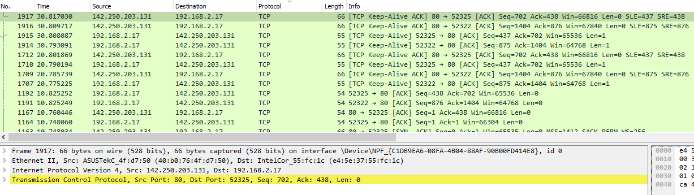
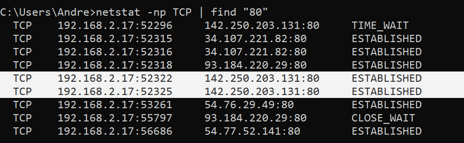
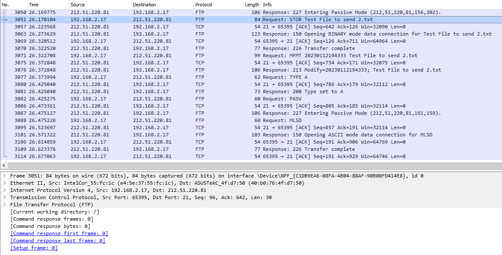
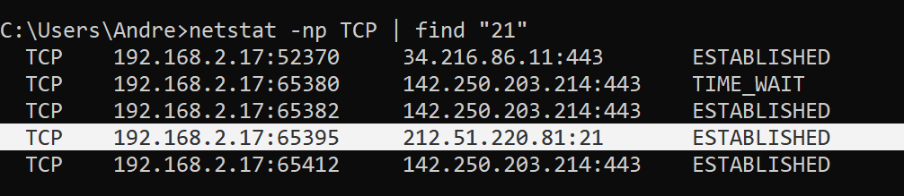
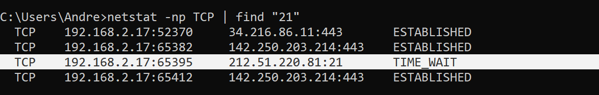
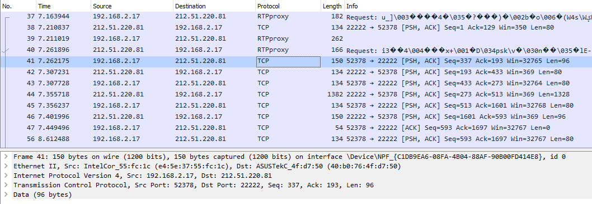
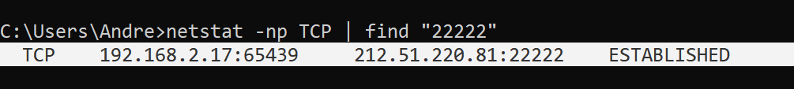
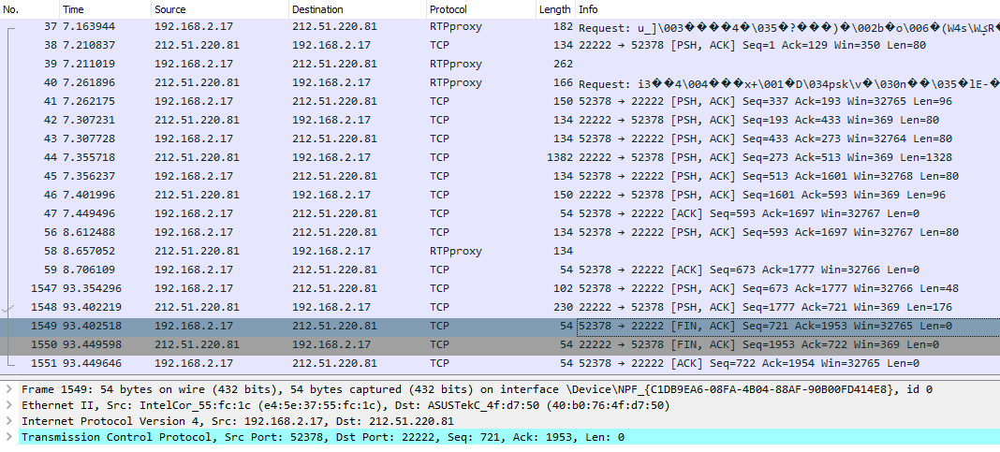
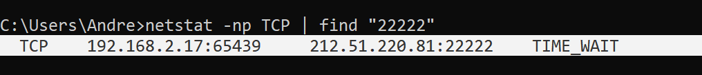
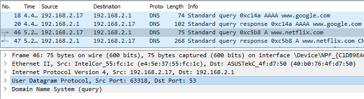

1. Teoretical Part
1.1. TCP & UDP
TCP (Transmission Control Protocol)
A protocol used for reliable transmission of data. It assures that entirety of the message is delivered and that two sides of the connection are aware of it. It manages that i.e. by assigning numbers to individual packets (so they can be read in the correct order) or establishing connection via handshake.
TCP protocol parameters:
bind (Bind Address) - IP address of the host bound to the message (sender)
connecttimeout (Connection timeout) - Allowed time to wait until connection is available
dropworking (Drop working connections) - specifies that a connection can be disconnected due to an idle timeout or a ping failure
idletimeout - time allowed to wait in the idle state (in milliseconds)
pingfrequency (Ping frequency interval) - frequency in which ping messages are sent to check that the applications are still active
port - specifies the TCP/IP port number on which the protocol handler listens for incoming client requests
TCP connection:
three way handshake - a technique used by TCP to increase reliability of the connection.
connection establishment -
connection release -
UDP (User Datagram Protocol)
A faster, less reliable cousin of TCP. It's used in situations where data has to be sent on the fly, but pieces of it can be lost, i.e. internet calls, video streaming and multiplayer games. UDP is less complicated, because it lacks many techniques used in TCP and doesn't require proper communication set-up.
UDP protocol parameters:
ports: TCP works on
2 Practical Part
(2.1.1) Enter www.google.com webpage using preferred browser. Use netstat and Wireshark to identify ports which are used for data transmission (local and remote port numbers). Finish the connection (close the browser) and check local port status.
We use Wireshark first to catch packets during connection with google
We can see the source and destination ports with TCP packets (80 and 52325 / 52322)
Next we use netstat command with a filter for faster search (as we already know the ip and ports of google.com)
(2.1.2) Copy the file from your local host to studife.it.p.lodz.pl server using ftp protocol. Use netstat and wireshark to identify ports which are used for data transmission (local and remote port numbers). Finish the connection and check local port status.
After sending a file (Test_File_to_send_2.txt) we can see the FTP packets on wireshark
We can see the ports listed in the Transmission Control Protocol details
Search in Netstat with proper ip filter returns following results:
After we interupt the connection with FTP we can see that the state of connection changes to "Time_Wait" and in wireshark packets with FIN flag are sent.
(2.1.3) Copy the file from your local host to studife.it.p.lodz.pl server using scp or sftp protocol. Use netstat and Wireshark to identify ports which are used for data transmission (local and remote port numbers). Finish the connection and check local port status.
After sending a file (Test_File_to_send.txt) we registered following TCP packets in wireshark
Ports are visible here the same way as before.
By using netstat command we can see that this connection has a status Established
After closing the connection we can see the same way as before that FIN flaged packets are sent to the server and after Acknowledgements the connection is closed and it's status changes to "Time_Wait"

(2.1.4) Use Wireshark to check which protocol and port is used in transport layer by DNS protocol.
After searching any internet site (in this case: Netflix.com) we send packets to DNS server which are being captured in wireshark as shown below
We can see that the User Datagram Protocol is being used along with port 53